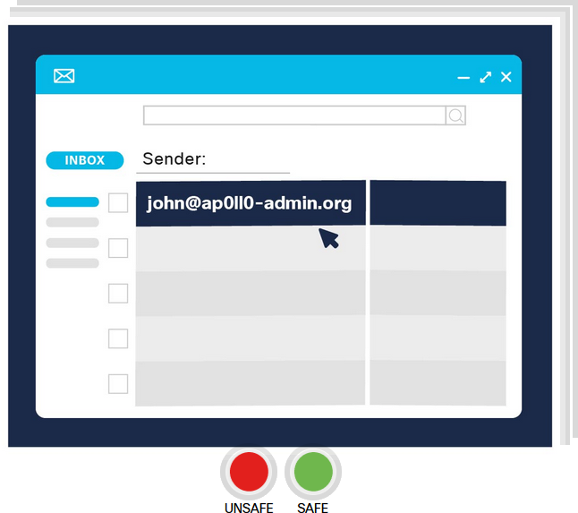
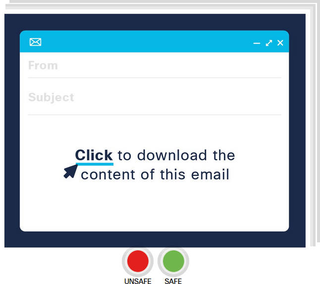
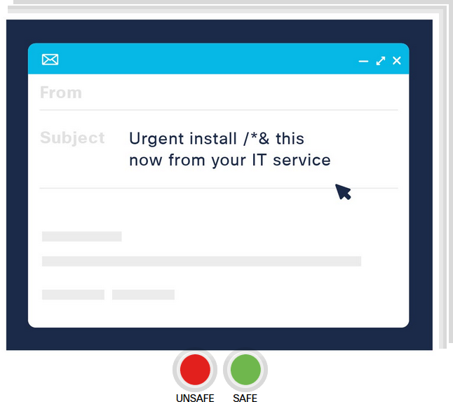
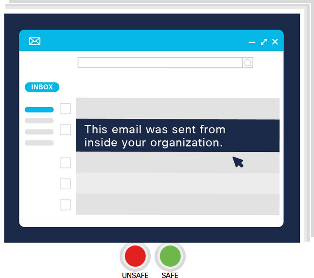

Explain the basics of being safe online, including what cybersecurity is and its potential impact.
Explain the most common cyber threats, attacks and vulnerabilities.
Explain how organizations can protect their operations against these attacks.
Access various information and resources to explore the different career options in cybersecurity.
Module 3 - Protecting your Data and Privacy
Welcome to this module, which looks at how to protect yourself online and maintain your privacy.
Remember, your online data is valuable to cybercriminals. So what can you do to stay safe?
There are some simple strategies that you can use to protect your personal devices and maintain your
data securely. Let’s take a look at what these are.
Chapter 3.5 - LAB Discover Your Own Risky Online Behavior
3.5.1 Scenario 1
Do you know what information is safe to share on social media sites?
Transcript
Describer:
A computer screen shows a social media website with a picture of a beach and a ‘post’ button.
The words ‘Finally on holidays!!!’ are typed as a caption above the picture.
Narrator:
Always limit the amount of information you share online.
Describer:
A red triangle appears containing an exclamation mark, giving a ‘danger’ warning sign.
Narrator:
Think about the data you are about to share about yourself. Could it cause a threat?
Describer:
The camera zooms out to show the whole computer. A loading progress line connects the computer
to a Word Wide Web icon and then connects to a hooded character sitting in front of a laptop
with a ‘skull and crossbones’ symbol on it.
Narrator:
Posting something that contains your address combined with a recent photo of you on holiday
could be an invitation for criminals to target your house.
Describer:
View returns to the computer still showing the social media website with the beach image and
caption ‘Finally on holidays!!!’. A mouse pointer clicks the ‘Post’ button and it uploads to the
webpage.
Narrator:
Remember that a post on social media may spread fast as it can be shared again and again with
people you don’t know.
It’s surprising what people post on social media without thinking!
Which of the following do you think poses a risk if posted on social media?
Select three correct answers
Explanation:
Photos showing bank details or valuable goods and vacation information always put you at risk,
and especially when you’ve previously given clues about where you live, or where you are going to
visit. Always stop and think about what you are about to post — would you tell it to a complete
stranger?!
3.5.2 Scenario 2
When creating a new account in an online service, what password do you use? Is it secure?
A computer screen appears and shows different login screens. A hidden password is typed into
each login box.
Narrator:
For each online service you use, you should use a unique secure password.
Describer:
Mouse cursor clicks the ‘Log in’ button on the @Apollo login screen. The hidden password turns
red and an error message appears saying ‘Looks like these are not your correct details. Please
try again’.
Narrator:
Memorizing many passwords can become challenging but writing them down would be a security
nightmare if someone got access to them.
Describer:
The camera zooms in to the @Apollo login screen, which resets and a ‘Password Manager’ dialogue
box appears next to a padlock icon in the top-right of the computer screen.
Narrator:
Instead, you should start to use some password manager applications.
Describer:
Mouse cursor clicks on an arrow symbol next to the word @Apollo in the ‘Password Manager’
dialogue box. Username and password information are then seen populating in the login fields.
Password manager applications can protect passwords by saving them in a secure encrypted form.
They enable random passwords to be generated and managed easily, averting the need for users to
have the same password for multiple accounts, which presents a security risk.
3.5.3 Scenario 3
Connecting to an open Wi-Fi hotspot can make your system and data vulnerable to an attack.
Transcript
Describer:
Three circles appear containing pictures of hands using a mobile phone, a woman sitting at a
computer and hands typing on a keyboard.
Narrator:
Being online has become such an essential part of our daily life.
Describer:
The camera zooms into the woman sitting at a computer. The screen shows a ‘Connect to Wifi’
login box for the network CoffeShopWifi. A hidden password is typed in and the mouse cursor
clicks the ‘Connect’ button.
Narrator:
However, we should all think twice about getting online via a public open Wi-Fi hotspot.
Describer:
The camera zooms out to show the woman sitting in a coffee shop environment as she accesses the
@Apollo website. A hooded figure sits at a computer on a nearby table. The screen moves to focus
on the hooded figure and a ‘Downloading confidential information’ box appears with a loading bar
showing download progress.
Narrator:
It might be hosted by an attacker who will have access to the data you are transferring.
Describer:
The screen divides into four sections as the progress bar in the ‘Downloading confidential
information’ box turns red before completing and says ‘FAILED’. In the other areas of the
screen, the hooded figure can be seen, along with the woman in the coffee shop and a ‘Connect to
VPN’ login box.
Narrator:
Try to use a VPN to provide a security layer over the insecure open Wi-Fi network, and only
access websites over HTTPS.
Describer:
A mouse cursor clicks to connect to VPN and the screen returns into the woman sitting in the
coffee shop once again as she accesses the @Apollo website as a VPN user. The URL address
https://www.apollo.com
can be clearly seen.
@Apollo’s Sales Manager is traveling to meet a client. She forgot to download the contract from
@Apollo’s server to bring to the meeting with her. The train has an open Wi-Fi network. She
contacts you to ask what she should do. What would you advise?
Explanation:
The Sales Manager can use the VPN connection on her laptop to create a secure, encrypted channel
back to @Apollo, on top of the untrusted open Wi-Fi network. This way, all the traffic from her
laptop will be securely transferred over the secure VPN tunnel.
3.5.4 Scenario 4
Are you aware of the risks that come when downloading a trial version of a program?
Transcript
Describer:
A computer screen comes into view showing a progress loading bar entitled ‘Installing Trial’. A
red triangle appears containing an exclamation mark indicating a danger warning,
Narrator:
Installing applications on your device from non-trusted sources is a huge security risk.
Describer:
A gremlin icon appears in the middle of the computer screen and several folder icons on the
left-hand side begin to display ‘No entry’ symbols.
Narrator:
How do you know the application is not coming with malware?
Describer:
A pop-up appears in the top-right corner of the screen saying ‘You have 5 new messages’.
Narrator:
Can you take the risk?
Describer:
A mouse-cursor clicks on the pop-up and a Mailbox opens showing several emails with subject
lines relating to hacking and data security breaches:
URGENT: Your online banking account has been hacked.
URGENT: Your social media accounts have been closed down.
IMPORTANT: Your fraudulent activity is being investigated.
URGENT: Please get in touch about your online account.
EMERGENCY ACTION REQUIRED: You are a victim of ID theft!!!
Narrator:
Can your organization take the risk?
A designer at @Apollo needs to install some image manipulation software. The mainstream
application is really expensive, and it’s only needed for one small piece of a one-off project.
The Design Manager says this would not be a cost-effective purchase and says to install an
alternative free application instead — the manager doesn’t mind if it’s from an untrusted source
as they feels the risks are low. Should the designer take the manager’s advice?
Explanation:
The designer should check with a member of the IT team before installing any applications from a
non-trusted source, even if it was advised by a manager. No organization can afford to take the risk
of a cyber attack from installing applications from an untrusted source.
3.5.5 Scenario 5
Have you ever had a warning message telling you to download a diagnostics program that will make
your computer safe? You should be aware of the risks.
Transcript
Describer:
A computer screen comes into view showing a pop-up box with the message: ‘Your computer has been
infected with a virus and your computer is at risk. Download A++ Premium anti-virus software to
prevent harm to your files now.’ Red warning triangles containing exclamation marks are
positioned next to the wording to create a feeling of danger.
Narrator:
You might have seen these in the past — you are browsing the web and suddenly a pop-up with a
scary warning appears…
Describer:
The camera zooms into the pop-up box message and the mouse-cursor clicks the ‘Download Now’
button.
Narrator:
It says that your computer is infected with a virus and recommends downloading a special
antivirus software.
Describer:
The screen changes to show a larger pop-up window containing a gremlin icon and a ‘Downloading’
progress bar, which begins to fill. The mouse-cursor clicks ‘Cancel’ and the pop-up closes,
returning to the computer screen’s desktop view.
Narrator:
You should never follow any of these instructions! Most of these pop-ups are only trying to
convince you to download a new potentially malicious application to your computer.
Describer:
The mouse-cursor clicks on an ‘Antivirus software’ icon in the top-left corner and an
application window appears showing a progress bar and the message ‘Running a security scan’.
Narrator:
Rather, just close the pop-up or the browser and to be sure, run a system security scan with
your trusted antivirus software on your computer.
Describer:
The progress bar completes and the message changes to ‘System security scan completed. You have
accessed a website that poses a security risk. We are checking your system and will delete any
harmful files.’
This message appears while you are online. Which of the following actions should you take?
1. Close the pop-up or browser by:
2. Protect your system, which hasn’t been corrupted yet, by:
s
3. Check if a legitimate application update is needed from a trusted source by:
Explanation:
Clicking anything other than the close icon could put your system at risk.
To be sure, you should run a system security scan with your trusted antivirus software on your
computer. And you should always refuse or cancel update reminders unless you are sure they are from
the official, trusted source.
3.5.6 Scenario 6
Clicking on links in an email might seem safe, but often all is not what it seems. Make sure you
know the signs to look out for!
Camera zooms across an office environment to an employee sitting at a computer. A ‘You have a
new email’ message pops up on their screen.
Narrator:
You have just received an email that looks like it is from your IT department.
Describer:
The camera zooms in as the mouse-cursor clicks to open the mailbox. The email is opens
containing the wording:
Narrator:
It is written in broken English and requests that you click a link to re-activate your account.
Describer:
The mouse-cursor highlights the email address: From: itdepartment
The mouse-cursor then clicks to delete the email.
Narrator:
It sounds pretty suspicious. If the link URL is outside of your organization’s domain, it is
most probably a phishing email — delete it.
Describer:
The mouse-cursor clicks to view the next email, which shows the message:
Narrator:
However, even if it looks OK, before clicking on any links, you should first check-in with your
IT department to make sure they really did send this email.
@Apollo has seen an increase in the number of phishing emails being received by their staff.
They decide to implement a quick training exercise to help employees spot the signs of an
unsafe email. Have a go yourself!
Sample 1
Answer:
unsafe
Sample 2

Answer:
unsafe
Sample 3

Answer:
unsafe
Sample 4

Answer:
unsafe
Sample 5

Answer:
safe
Explanation:
The key indications of a potential phishing email are signs that it has been sent from outside of
the organization.
Remember that even if you think the email is safe, you should always check with your IT department
before clicking links to download anything.